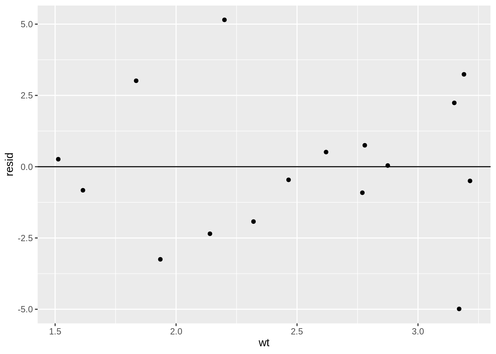
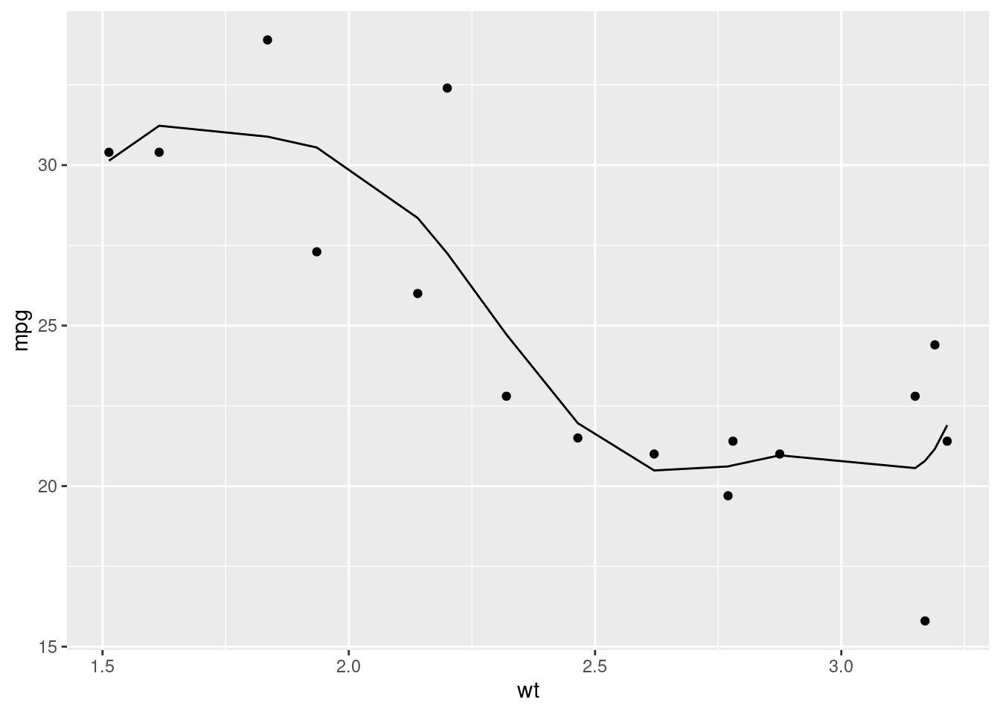
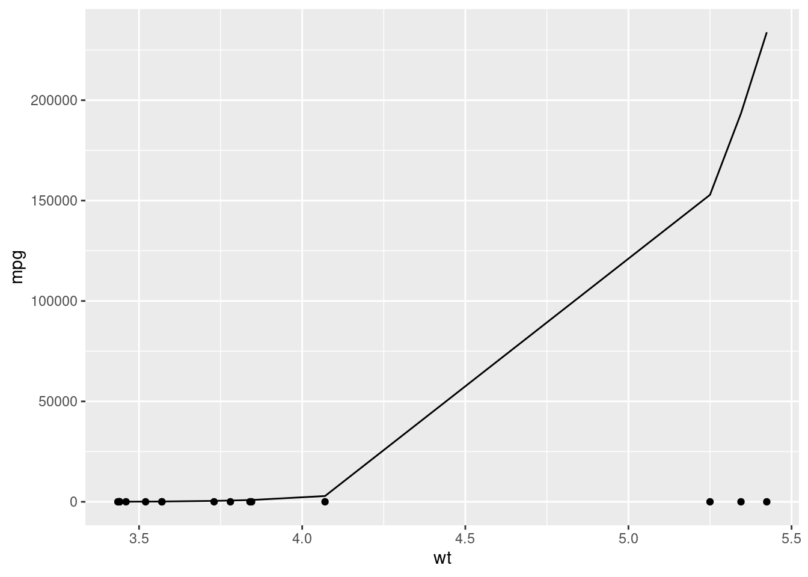

14.6 Evaluating Models
Jumping straight into modelling a dataset you don’t understand or creating a model that looks good and then declaring that your work is done can be a dangerous thing. Modelling should be a weapon in your data science arsenal, but it should be handled with care. It’s very easy to make an error and end up with a model that is pointless at best and misleading at worst.
To demonstrate this, let’s produce 4 models for the each of the sub-datasets in the anscombe dataset:
tidy_anscombe <- anscombe %>%
tidyr::pivot_longer(everything(),
names_to = c(".value", "dataset"),
names_pattern = "(.)(.)"
)
models <- purrr::map(1:4, ~tidy_anscombe %>%
dplyr::filter(dataset == .x) %>%
lm(data = ., formula = y ~ x)
)
models## [[1]]
##
## Call:
## lm(formula = y ~ x, data = .)
##
## Coefficients:
## (Intercept) x
## 3.0001 0.5001
##
##
## [[2]]
##
## Call:
## lm(formula = y ~ x, data = .)
##
## Coefficients:
## (Intercept) x
## 3.001 0.500
##
##
## [[3]]
##
## Call:
## lm(formula = y ~ x, data = .)
##
## Coefficients:
## (Intercept) x
## 3.0025 0.4997
##
##
## [[4]]
##
## Call:
## lm(formula = y ~ x, data = .)
##
## Coefficients:
## (Intercept) x
## 3.0017 0.4999According to our output, we’ve got 4 very similar models. From that output we might assume that the datasets must be very similar. Let’s plot them now:
tidy_anscombe %>%
ggplot(aes(x = x, y = y)) +
geom_point() +
geom_smooth(method = "lm", formula = y ~ x, se = FALSE) +
facet_wrap(~dataset)
Now that we’ve looked a little deeper, we can clearly see that these models are inappropriate for three of the four datasets (2, 3 and 4). The lesson here is that there are multiple tools at your disposal when analysing data, and overeliance on a particular tool without due care and attention can cause issues.
With that in mind, let’s look at some ways of evaluating the strength of your model.
14.6.1 lm() Output
Now we’ve created a model using the lm() function, let’s understand the output a little bit so we can evaluate our model. When we just print the model, we get the formula we provided, and the coefficients:
print(lm_model)##
## Call:
## lm(formula = mpg ~ wt, data = mtcars)
##
## Coefficients:
## (Intercept) wt
## 37.285 -5.344By using the summary() function, we can find out a little more about our model:
summary(lm_model)##
## Call:
## lm(formula = mpg ~ wt, data = mtcars)
##
## Residuals:
## Min 1Q Median 3Q Max
## -4.5432 -2.3647 -0.1252 1.4096 6.8727
##
## Coefficients:
## Estimate Std. Error t value Pr(>|t|)
## (Intercept) 37.2851 1.8776 19.858 < 2e-16 ***
## wt -5.3445 0.5591 -9.559 1.29e-10 ***
## ---
## Signif. codes: 0 '***' 0.001 '**' 0.01 '*' 0.05 '.' 0.1 ' ' 1
##
## Residual standard error: 3.046 on 30 degrees of freedom
## Multiple R-squared: 0.7528, Adjusted R-squared: 0.7446
## F-statistic: 91.38 on 1 and 30 DF, p-value: 1.294e-10There’s a lot to unpack here.
Residuals
We’ve now got a residuals section that shows us the range and quartiles of our residuals. This can be helpful to understand whether your model is consistently over or underestimating
Coefficients
We’ve also now got an expanded view of our coefficients. We’ve still got our estimates, but now we’ve also got standard error, t value and then P value entries.
Standard error
The standard error represents the average difference between the estimated value and the actual value. So for example, our coefficient estimate for wt is roughly -5, meaning that we lose 5 miles per gallon for every increase of 1000 lbs (1 wt unit). Our error value of roughly 0.5 tells us that actually, on average, it’s between -5.5 and -4.5. If our standard error was 2, then that would suggest that on average, an increase in 1 wt unit would correspond with a change of between -7 and -3. A lower standard error value usually represents a more accurate model.
t value
The t value is then the estimate divided by its error. We can use this value to estimate the strength of our relationship between the two variables; a strong relationship (i.e. a high coefficient value) and a low error will produce a high t value. Conversely, a smaller coefficient value representing a weaker relationship and then a large error value suggesting that we’re struggling to accurately predict the value of y will have a low t value.
P value
P values are something of a hot topic in statistics so we won’t discuss them in length here. Instead, we’ll focus on exactly what a P value is - not whether it’s a good idea to use one.
A t value is converted to a P value via a T distribution table based on the degrees of freedom (don’t worry about what this is). P values represent how often we would see this same t value if the two variables had absolutely no relationship at all. The larger the t value is (i.e. the stronger the relationship appears to be), the less likely it is that we would observe this relationship purely by chance. The typically accepted value for considering a relationship to not be the result of chance is 0.05 (i.e. we’d only see these results if there was truly no relationship 1 in 20 times), but that’s more an academic rule of thumb. In reality, you shouldn’t really rely too heavily on the p value to tell you the strength of your model.
Residual standard error
This is the residual standard error of the entire model (as opposed to a single variable). The logic is the same though; it’s the average difference between our model’s estimate and the actual value. This is almost equivalent to the Residual Mean Standard Error we calculated before, but it’s calculated slightly differently.
Multiple & Adjusted R-squared
The R-squared value represents how much of the variance in y can be explained by your model. So we’ve got a Multiple R-Squared value of around 0.7, meaning that 70% of the variance we see in the mpg value can be explained by the effect of wt. The larger the value the better. But if you ever get an R-Squared value of 1, you’ve definitely done something wrong.
If you have one variable, then the Multiple R-Squared value is fine to use. If you have more than 1 though, the Adjusted R-Squared value will account for the fact that you’re going to explain more variance simply by adding more variables, and so tries to correct for that.
F Statistic
The F statistic is a global test for whether any of your coefficients are non-zero (if you have a relationship between any of your variables and the dependent variable). The reason we have this global test is that as you increase the number of variables in our model, you’re increasing the likelihood that at least 1 will have a significant relationship with your dependent variable. We learned before that our rough estimate for considering a ‘true’ relationship is that we would only observe the t value of that size once every 20 times if there was no relationship. Well then if you include 20 variables, you’ll get one significant predictor on average each time. The F value takes this into account and then tells you whether you have at least 1 significant predictor given the number of variables that you tried.
14.6.2 Residuals
As we’ve learnt previously, the goal of our model is to reduce the total residual difference between our model and the data. But blindly reducing this value without then inspecting the result can be dangerous. When you’re using the lm() function, your residuals should be normally distributed. That means that (essentially) your model should be overestimating as much as it’s underestimating for every value of y.
Let’s take a look at the residual values for our mtcars model:
mt_residuals <- mtcars %>%
modelr::add_residuals(model = lm(data = mtcars, formula = mpg ~ wt + hp))
mt_residuals %>%
ggplot(aes(x = resid)) +
geom_freqpoly(binwidth = 0.5)
Things kind of look okay, but it’s tough to know for sure because have so few estimates. Let’s take a look at how our residuals change for different mpg values:
mt_residuals %>%
ggplot(aes(x = mpg, y = resid)) +
geom_point()Here we can see what looks like random noise. This is good because it means that our model isn’t performing better for some values than for others. If it is, that means we have a systematic bias in our model.
Alternatively, let’s compare this plot with a plot of one of the anscombe datasets:
tidy_anscombe %>%
dplyr::filter(dataset == 2) %>%
modelr::add_residuals(model = models[[2]]) %>%
ggplot(aes(x = x, y = resid)) +
geom_point()
Here we can see a very clear trend, meaning that our model is not representing the data very well. Instead, it is overestimating and underestimating in a predictable pattern for different values of x. If you see a residual plot like this, you’re likely not applying an appropriate model family or type.
14.6.3 Overfitting
The goal of a model is usually to make a prediction. To be able to make those predictions, we train the model on observed data (i.e. data where we have the values of the independent and dependent variables). However, if we train the model to represent the observed data too well, the model may not perform well on new datasets. We call this overfitting - our model represents the test data too well and does not generalise well.
Let’s look at an example of overfitting. We’ll split the mtcars dataset into two; a training set and a test set. We’re purposely going to split our data badly here but in reality you’d split the dataset randomly.
train_mtcars <- dplyr::filter(mtcars, wt <= 3.3)
test_mtcars <- dplyr::filter(mtcars, wt >= 3.3)Then we’ll train our model on the test set and evaluate the residuals:
# This is the same as wt + wt^2 + wt^3 + wt^4 + ... wt^7
overfit_model <- lm(data = train_mtcars, formula = mpg ~ poly(wt, 7))
train_mtcars %>%
modelr::add_predictions(overfit_model) %>%
ggplot(aes(y = mpg, x = wt)) +
geom_point() +
geom_line(aes(y = pred))
train_mtcars %>%
modelr::add_residuals(overfit_model) %>%
ggplot(aes(x = wt, y = resid)) +
geom_hline(yintercept = 0) +
geom_point()
Things seem to look fine. Our residuals look pretty random and we seem to be representing the data we have well. When we then apply the model to our test dataset however…
test_mtcars %>%
modelr::add_predictions(overfit_model) %>%
ggplot(aes(y = mpg, x = wt)) +
geom_point() +
geom_line(aes(y = pred))
That’s clearly not right at all. We’ve got predictions that are nowhere near the actual values.
What’s happened is our model has overfit the training data, representing noise and randomness as a true relationship between the variables. When we then apply the model to new data then, where that noise is different, it performs terribly.
Let’s compare this with a simpler model that doesn’t overfit.
nonoverfit_model <- lm(data = train_mtcars, formula = mpg ~ wt)
test_mtcars %>%
modelr::add_predictions(nonoverfit_model) %>%
ggplot(aes(y = mpg, x = wt)) +
geom_point() +
geom_line(aes(y = pred))
Much better. The model still isn’t perfect - certainly not as good as if it was trained on all the data - but it’s much better than our previous example even though it’s much less complex.
14.6.3.1 Avoiding overfitting
Unforunately, there’s no single way to really avoid overfitting. There are things that can be done to mitigate it though:
- Prefer simplicity
- Where possible, a simpler model will likely be preferable to a more complex model
- Split your test and training data appropriately
- In our example, we purposely split the training data badly but in practice you should aim to represent your data equally well in both your training and test datasets.
- Properly evaluate your models
- By properly evaluating and understanding our model, you should be able to identify and mitigate the effects of overfitting